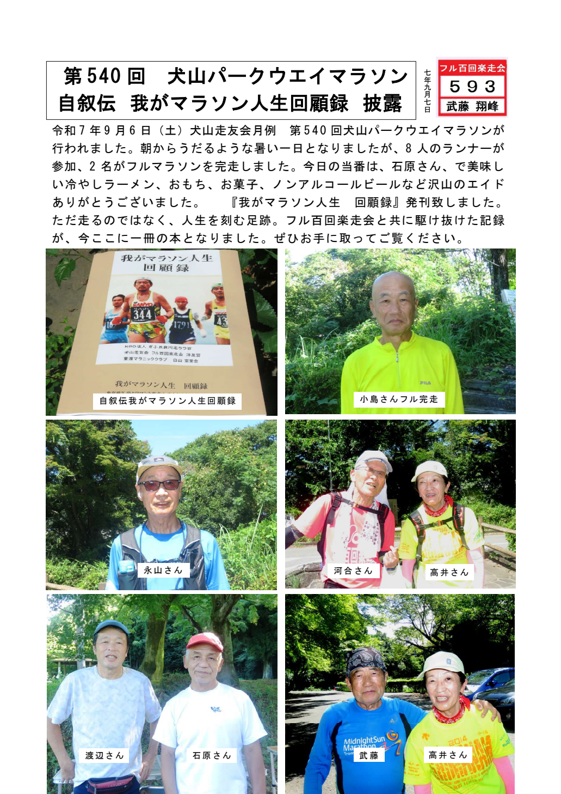

2025-09-06 18:40:09
2025年9月6日（土）
| No. | 参加者 | 距離 | 時間 |
|---|---|---|---|
| 1 | 渡辺 和次 | 16km | 3:40:00 |
| 2 | 武藤 彰 | 8km | 2:32:17 |
| 3 | 小島 博史 | フル | 7:13:48 |
| 4 | 藤吉 洋子 | 10km | 2:00:00 |
| 5 | 永山 敏巳 | 37km | 6:55:30 |
| 6 | 横幕 真美子 | フル | 6:08:32 |
| 7 | 河合 邦純 | 17km | 4:30:00 |
| 8 | 高井 妙子 | 17km | 4:30:00 |
コメント：渡辺
月例犬山は朝から晴天にて、まだまだ暑い日となりました。
8名の参加者が各々の距離を完走しました。エイドは石原さんが担当しました。
冷やしラーメンと磯辺揚げ、沢山の飲食物提供して頂き感謝申し上げます。
参加者の皆様お疲れ様でした。
